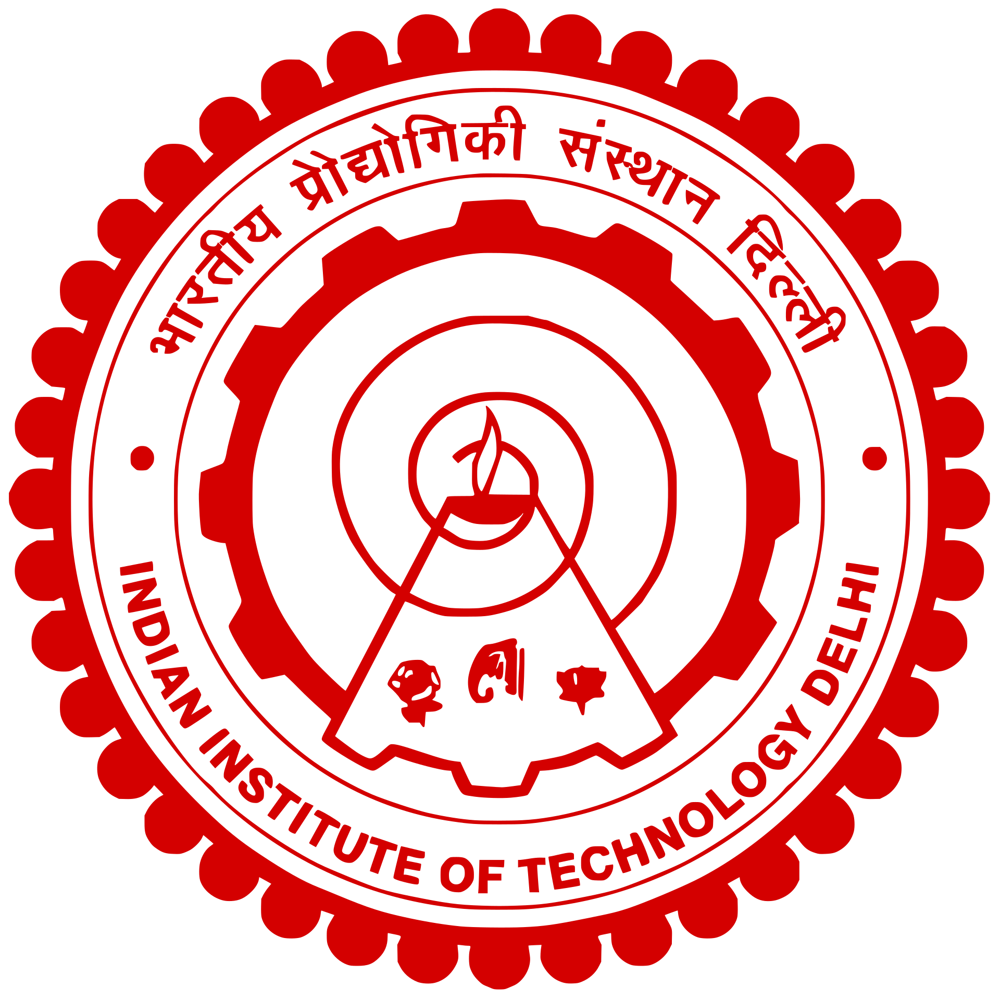

Education

Ph.D. in Data Science
University of California, San Diego, USA
(September 2022 – Present)
Advisors: Prof. Rose Yu & Prof. Yi-An Ma.

Dual Degree (B.Tech + M.Tech) in Mathematics and Computing
Indian Institute of Technology, Delhi, India
(July 2017 – May 2022)
Thesis Advisor: Prof. Sivananthan Sampath.